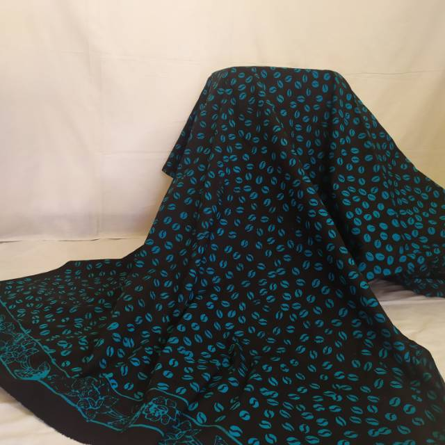
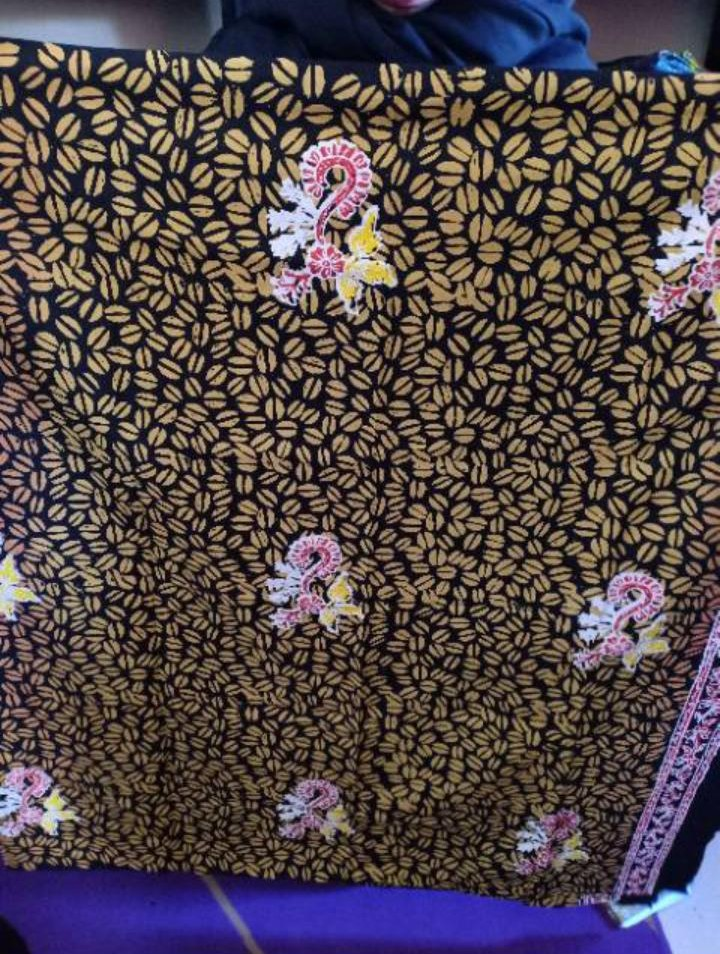
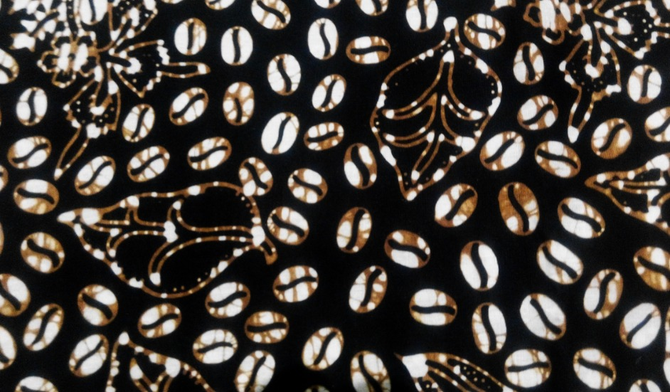

Sejarah & Inspirasi
Motif Batik Kopi Pecah terinspirasi langsung dari biji kopi yang terbelah. Lahir dari kreativitas perajin yang mengangkat unsur lokal, mengingat Banyuwangi (khususnya wilayah Kalibaru, Glenmore, dan Songgon) merupakan salah satu daerah penghasil kopi terkenal di Jawa Timur.
Motif ini tidak hanya mengangkat keindahan visual biji kopi, tetapi juga menceritakan perjalanan panjang komoditas kopi yang menjadi bagian penting dari kehidupan ekonomi dan sosial masyarakat Banyuwangi.
Makna Filosofis
Di balik bentuknya yang sederhana, Batik Kopi Pecah melambangkan nilai-nilai kehidupan yang mendalam:
Kerja Keras & Ketekunan
Melambangkan kerja keras, ketekunan, kesabaran, dan perjuangan para petani kopi.
Proses yang Panjang
Sama seperti biji kopi yang harus melalui proses panjang sebelum menjadi nikmat, keberhasilan hidup juga tidak bisa diraih secara instan melainkan butuh proses berkelanjutan.
Proses Pembuatan
Pembuatan Batik Kopi Pecah membutuhkan ketelitian tinggi dan melewati 5 tahapan utama:
1. Pembuatan Pola
Menggambar motif biji kopi yang terbelah pada kain putih menggunakan pensil atau alat gambar khusus.
2. Pencantingan
Menorehkan lilin/malam panas menggunakan canting untuk menutupi bagian-bagian tertentu agar tidak terkena warna.
3. Pewarnaan
Pemberian warna tradisional (coklat, hitam, krem) atau warna modern sesuai permintaan pasar.
4. Pelorodan
Merebus kain untuk menghilangkan malam/lilin sehingga motif asli kopi pecah terlihat jelas.
5. Finishing
Pencucian, pengeringan, dan quality control untuk memastikan kain siap dipasarkan.
Fakta Menarik & Aplikasi
Kombinasi Motif
Motif ini sering dikombinasikan dengan motif khas Banyuwangi lainnya seperti Gajah Oling untuk menciptakan desain yang lebih kaya.
Promosi Potensi Daerah
Selain menjadi kain indah, motif ini menjadi media promosi potensi kopi daerah Banyuwangi ke mata dunia.
Fashion Modern
Motif Kopi Pecah kini diaplikasikan secara luas pada produk fashion modern seperti kemeja, gaun, tas, hingga aksesori.
Kesimpulan
Batik Kopi Pecah adalah identitas budaya Banyuwangi yang unik. Kain ini tidak hanya merepresentasikan kekayaan alam lokal, tetapi juga membawa pesan moral yang mendalam tentang indahnya sebuah proses dan kerja keras.
Galeri



